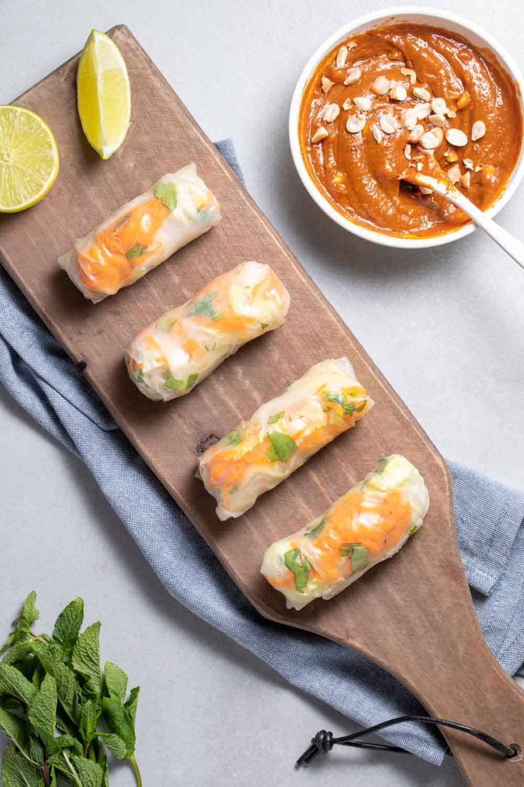

Tofu Spring Rolls

Ingredients
- 16 oz firm tofu, drained, rinsed and pressed
- 1 packed cup shredded Napa cabbage
- 1 packed cup shredded carrots
- 1/4 cup chopped fresh cilantro
- 1/4 cup chopped fresh mint
- 2 cups cooked vermicelli noodles (or thin rice noodles)
- 12–15 rice paper wrappers
Spicy Peanut-Lime Sauce
- 1/4 cup peanut butter
- 3 tablespoons soy sauce
- 1–2 tablespoons Sriracha
- 1 tablespoon hoisin sauce
- Small lime, juiced
- 1 tablespoon hot water
Instructions
- First, whisk together all ingredients for the peanut-lime sauce and set aside.
- Drain and press the tofu. Heat a large cast-iron or non-stick pan over medium heat.
- Meanwhile, slice the tofu into slabs so they can lay flat on the rice paper rolls.
- Next, place the tofu in a single layer on the skillet and cook for 2-3 minutes until golden brown. Remove from skillet and brush peanut sauce in a thick layer on one side.
- Prep the vegetables, tofu, and noodles.
- To assemble spring rolls, pour very hot water into a shallow dish and place 1 rice paper to soften for about 10-15 seconds.
- Place the wrapper on a a cutting board and spread out into a circle. It’s OK if it rips a little but if it rips too much, get a new one and start again. Layer the tofu (sauce side down), noodles, cabbage, carrots, mint and cilantro on the bottom third of the paper. Gently fold over once, tuck in edges, and continue rolling until seam is sealed. (like a burrito!)
- Place seam-side down on a serving platter and cover with damp warm towel to keep fresh. Repeat until finished, you should have about 12-15 spring rolls total.
- Now, serve with remaining peanut-lime sauce. Leftovers store well individually wrapped in plastic wrap, though taste best when fresh.